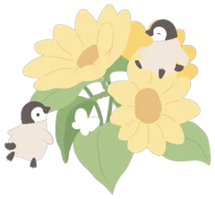
레몬 파운드 케이크
전체 스티커 보기
아델리드로우의 디지털 문구
아껴둔 스티커를 붙이는 기분 그대로.
아델리드로우의 그림과 종이를 고르고,
사진과 짧은 글을 더해 하루를 남겨보세요.
Adelie Pages는 지금 출시를 준비하고 있어요.
오늘의 작은 행복
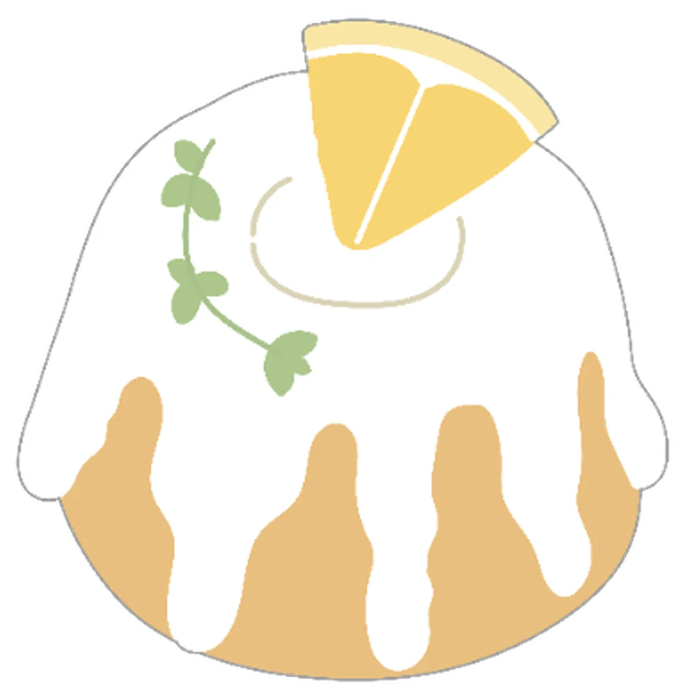
좋아하는 걸 하나씩 모아두기.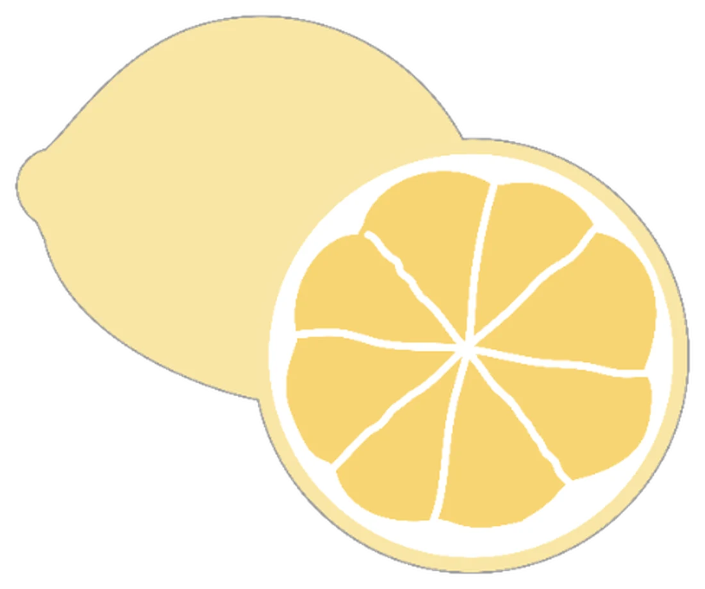
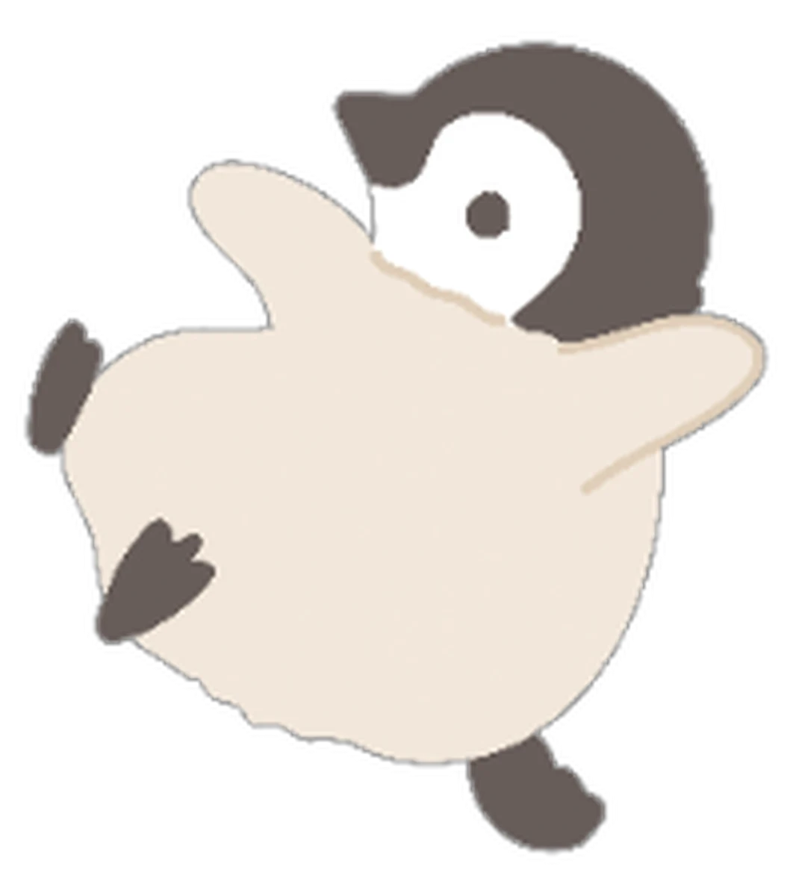
붙이는 순간, 내 취향이 되는 그림.The sticker collection
팩을 열면 안에 담긴 스티커를 모두 볼 수 있어요.
마음에 드는 그림은 눌러서 더 가까이 살펴보세요.
3개의 스티커팩
아델리드로우의 디지털 문구
전체 스티커 보기
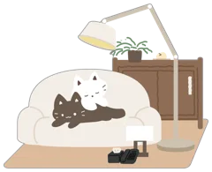
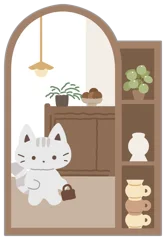
전체 스티커 보기
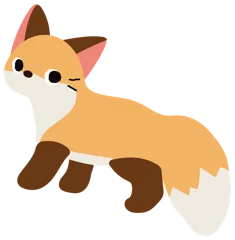
전체 스티커 보기
다른 단어로 찾아보거나 전체 팩을 둘러보세요.
현재 소개 중인 스티커팩이에요. 새로운 컬렉션도 차근차근 선보일게요.
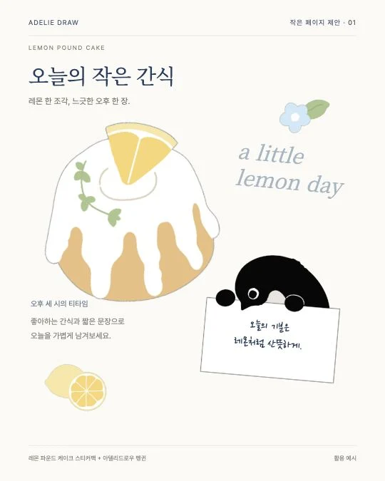
From a sticker to your page
예쁜 스티커 한 장에서 시작해도 좋아요.
빈 종이를 펼치거나 좋아하는 사진을 불러오고,
그날의 기분에 맞는 그림과 문장을 얹어보세요.
스티커의 크기와 위치를 바꾸고, 글을 더하고.
사진 일기부터 짧은 안부 카드까지
내가 담고 싶은 만큼만 꾸미면 돼요.
Inside Adelie Pages
발견하고, 꾸미고, 다시 꺼내 보고.
좋아하는 것들이 한곳에 모여요.
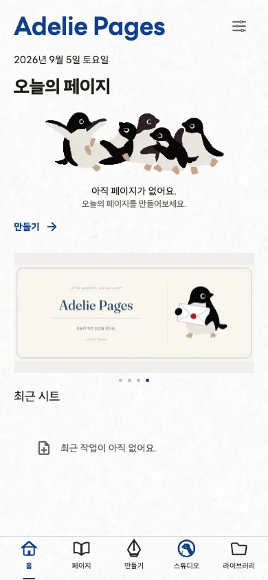
홈과 Studio에서 아델리드로우의 스티커팩을 만나보세요. 팩에 담긴 그림과 활용 예시를 살펴보고, 내 페이지에 쓰고 싶은 소재를 골라요.
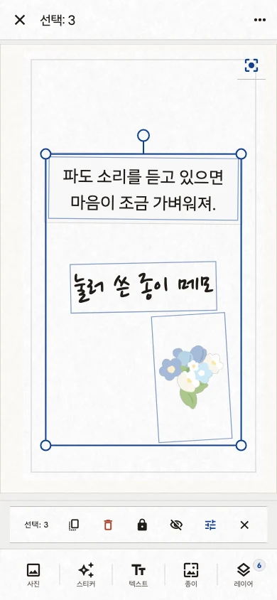
빈 페이지나 내 사진에서 시작해요. 스티커와 글을 배치하고 크기를 조절해 원하는 구성을 만들어요. 여러 소재를 함께 선택해 옮기거나 복제할 수도 있어요.
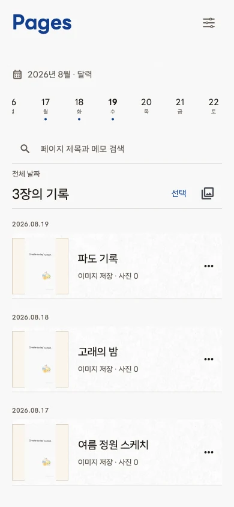
만든 페이지는 기기에 보관하고 Pages에서 다시 열어 편집해요. 완성한 한 장은 이미지로 저장하거나 공유해, 좋아하는 사람에게도 전할 수 있어요.
개발 중인 실제 앱 화면으로, 출시 버전은 달라질 수 있어요.
Before your first page
어디서 시작할지, 어떻게 간직할지.
미리 알아두면 좋은 이야기예요.
사진 한 장에 마음에 드는 스티커 하나만 붙여도 좋아요. 빈 종이부터 시작해 짧은 글을 적어도 되고요. 팩 활용 예시는 그림을 조합하는 힌트로 참고해보세요.
기기에 저장한 페이지는 다시 열어 사진과 글, 스티커를 편집할 수 있어요. 자주 쓰는 구성은 직접 템플릿으로 저장해 다음 페이지를 만들 때 활용할 수 있어요.
완성한 페이지를 이미지로 저장하거나 공유할 수 있어요. 편집 가능한 원본 문서가 아닌, 내가 꾸민 한 장의 이미지로 전달돼요.
Adelie Pages는 아직 출시 준비 중이에요. 정식 다운로드 경로가 준비되면 이 페이지에 안내할게요. 현재 페이지는 개발 중인 앱과 문구를 미리 소개하고 있어요.
A little more Adelie
아델리드로우의 그림을 더 가까이, 더 자주.
Adelie Pages는 스티커와 종이를 고르고
직접 써보는 즐거움을 담은 디지털 문구 앱이에요.
가장 먼저 펼쳐보고 싶은 페이지를
천천히 준비하고 있어요.